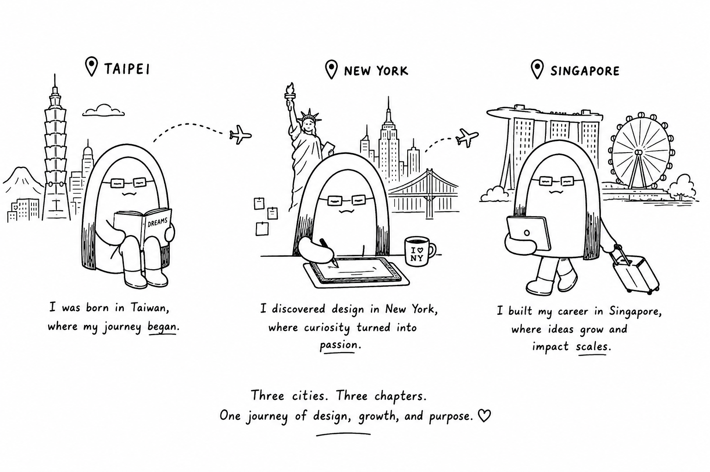

Design taught me empathy. Building taught me strategy.

I was born in Taiwan, discovered design in New York, and built my career in Singapore. Living across three cities taught me that great products aren't just shaped by technology — they're shaped by culture, behavior, and the people who use them.
Over the past eight years, I've designed products across travel, e-commerce, enterprise software, accessibility, and emerging AI experiences. From Booking.com and Dyson to government services and nonprofit initiatives, I've worked on products that balance business goals with real human needs.
Although my title has been Product Designer, my role has always extended beyond design. I enjoy connecting research, business strategy, technology, and cross-functional teams to turn complex problems into clear, meaningful experiences.
Today, I'm exploring the intersection of design, strategy, AI, and product building. I believe great design isn't just about creating beautiful interfaces — it's about creating clarity, aligning people, and helping ideas become products that make a lasting impact.